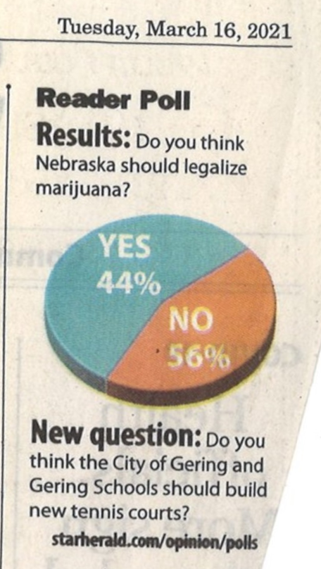
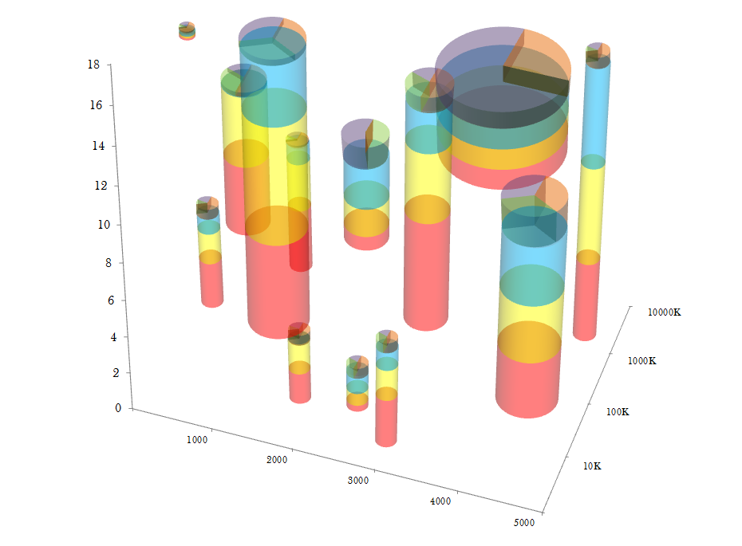
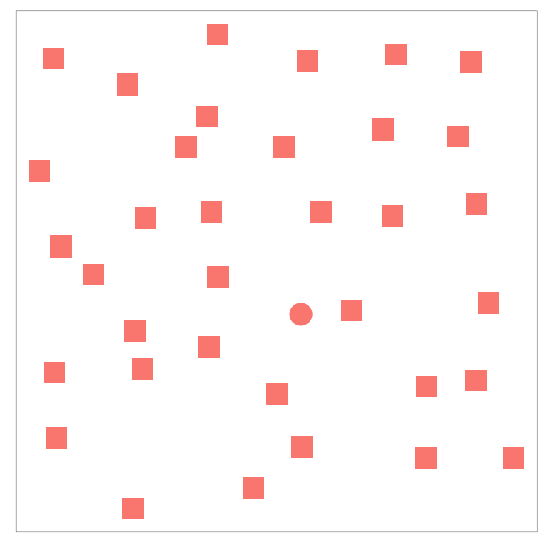
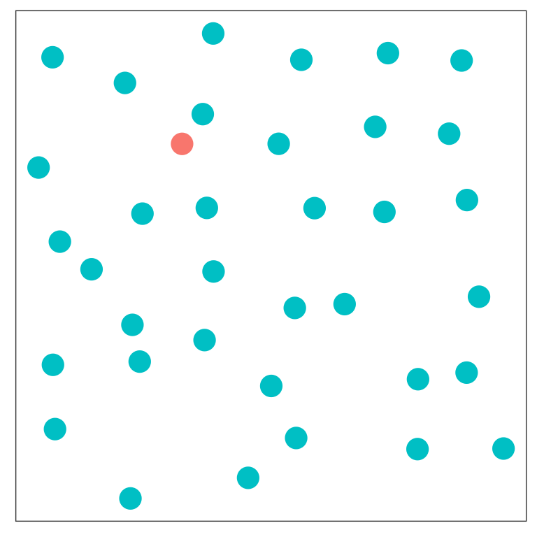
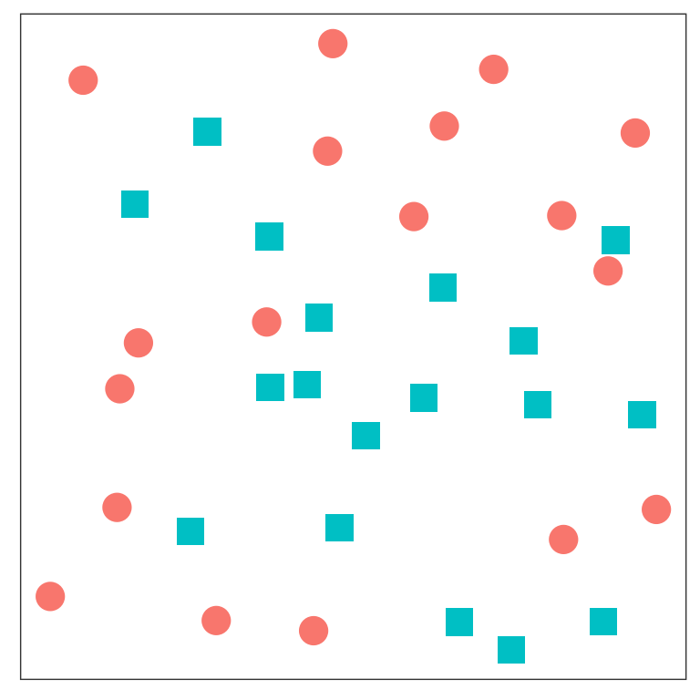
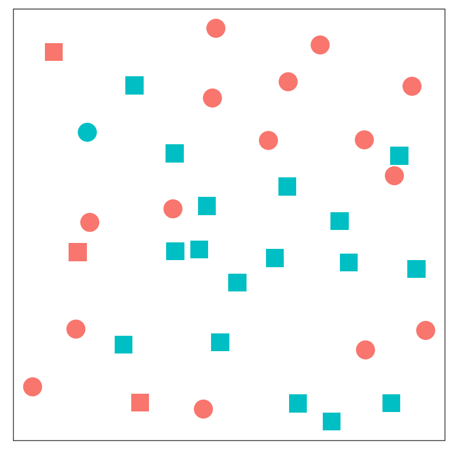
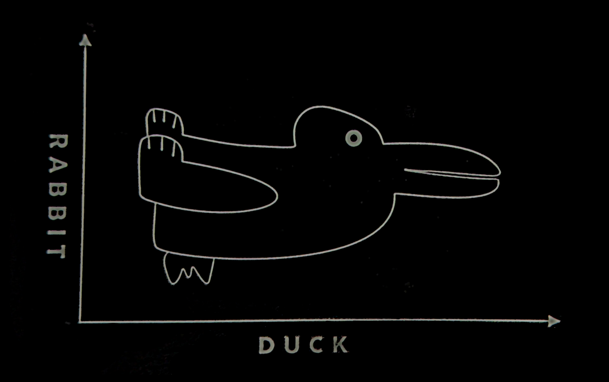
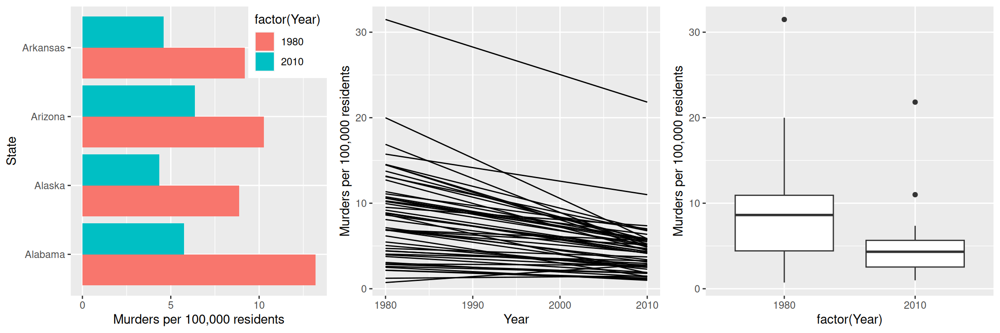

![A scatter plot showing the color index of a star on the x-axis and the absolute magnitude (brightness) of the star on the y-axis. Points are colored by spectral class, which varies from blue to white to yellow to red as the color index increases and the star's temperature decreases. Points are primarily located along a downward-sloping line from the top left to the bottom right, which is labeled the 'main sequence'. There is another set of points which diverges from the main sequence and extends out horizontally in the middle of the graph; these are labeled 'giants', and a few outliers that are above the giant cluster are labeled 'supergiants'. Below the main sequence stars, there are outliers which are labeled 'dwarfs'.](2023-REU-slides_files/figure-revealjs/HR-diagram2-1.png)
Creating Good Graphics
Identifying the problem
Ex 1 - Pie Chart Poll Results

Discuss:
What is wrong with this chart?
Do you think it might be misleading? If so, how?
Do you think the mistakes were intentional?
Ex 2 - High Support
Discuss:
What is wrong with this chart?
What would you change to more accurately represent the data?
Do you think the mistakes were intentional?
Ex 3 - Gas Prices
![Two bar charts showing the % increase in petrol and diesel prices in India (2018). The first chart shows an increase of 20.5% from 2004 to 2009 (real values of 33.71 to 40.62), an increase of 75.0% from 2009 to 2014 (real values of 40.62 to 71.41), and a 13% decrease from 2014 to 2018 (real values of 71.41 to 80.73). The last bar and arrow are shown in yellow, while the first three bars are shown in green. The second chart shows diesel prices, with real values of 21.74, 30.86, 56.71, and 72.83 in 2004, 2009, 2014, and 2018, respectively. Arrows show the change between each price set, with a 42% increase from 2004 to 2009, an 83.7% increase from 2009 to 2014, and a 28% decrease from 2014 to 2018, which is highlighted in yellow. At the bottom of each chart, an image of Narendra Modi is shown.](../image/bjp-gas-price.jpg)
Discuss:
What is wrong with this?
What design choices contribute to the problems?
Do you think this was intentionally designed to be misleading? Why or why not?
Ex 4 - Information Overload

Discuss:
What problems do you have reading this chart?
Can you compare the quantities of all 6 variables shown? Why or why not?
Designing Good Charts
Why Graphics Matter
Graphics are a form of external cognition that allow us to think about the data rather than the chart.
That is, graphics are a tool to make it easier for us to think about what the data means.
Why Graphics Matter
Good graphics take advantage of how the brain works, leveraging
preattentive processing
perceptual grouping
awareness of visual limitations
Good graphics also depend on the data: the chart type should be chosen based on the types of variables you want to display, the amount of data you have, and the results you want to highlight.
Hertzsprung Russell Diagram
![A scatter plot showing the color index of a star on the x-axis and the absolute magnitude (brightness) of the star on the y-axis. Points are colored by spectral class, which varies from blue to white to yellow to red as the color index increases and the star's temperature decreases. Points are primarily located along a downward-sloping line from the top left to the bottom right, which is labeled the 'main sequence'. There is another set of points which diverges from the main sequence and extends out horizontally in the middle of the graph; these are labeled 'giants', and a few outliers that are above the giant cluster are labeled 'supergiants'. Below the main sequence stars, there are outliers which are labeled 'dwarfs'.](2023-REU-slides_files/figure-revealjs/HR-diagram-1.png)
The Hertzsprung Russell diagram.
Why Graphics Matter
John Tukey, a famous statistician often considered the father of statistical graphics, wrote in Exploratory Data Analysis (1977):
The greatest value of a picture is when it forces us to notice what we never expected to see.
Discuss
- What variables are shown in each dimension?
- X location
- Y location
- color
- What non-data information is on the chart?
- What does this chart do well?
- What design features “work”?
- What don’t you like?
Perceptual Principles
Preattentive Perception
Occurs automatically (no effort)
Color, shape, angle
Combinations of preattentive features require attention
- Double-encoding (using multiple features for the same variable) is ok
Preattentive Perception


Preattentive Perception


Perceptual Grouping


Perceptual Grouping
![An image reading 'GESTALT', where each letter demonstrates a principle of gestalt grouping. G has a white stripe over it, demonstrating closure - the stripe and the G are perceived as separate objects. E is shown as a grid of black squares, with grey squares making up the background; this demonstrates proximity - small objects close together are perceived as being part of the same whole. A bar is woven through the S shape, showing good continuation - the S is perceived as a continuous object that is behind the bar in the middle portion. The two Ts are striped and indicate similarity - they are similarly shaped and patterned and can be perceived as a group. The AL are connected, and the inside of the A seems to have a white tree in the middle, demonstrating figure/ground. The final T is part of the similarity group.](../image/gestalt.jpg)
You can read about the gestalt rules here (Wikipedia contributors 2023), but they are also demonstrated in the figure above.
Example: Grouping in Charts
Which one best demonstrates that in every state and region, the murder rate decreased?
Perceptual and Visual Limitations
Our perceptual system is not infallible, and some people have additional challenges to work with.
Color
About 10% of the XY population and 0.2% of the XX population has some form of colorblindness or color deficiency.
Here are some basic tips for choosing color schemes for your charts.
Do not use rainbow color gradient schemes
- because of the unequal perception of different wavelengths, these schemes are misleading - the color distance does not match the perceptual distance.
Avoid any scheme that uses green-yellow-red signaling if you have a target audience that may include colorblind people.
Color
To “colorblind-proof” a graphic, you can use a couple of strategies:
- double encoding - where you use color, use another aesthetic (line type, shape) as well
- Can you print it in greyscale and read it? <- Foolproof option
- Use monochromatic gradients where possible
- For bidirectional scales, the safest scheme to use is purple - white - orange. Always transition through a light, neutral color.
Color
Be conscious of what certain colors “mean”
- Leveraging common associations can make it easier to read a color scale and remember what it stands for (e.g. blue for cold, orange/red for hot)
- Beware undesireable emotional responses to colors (red = death)
- Some schemes have social baggage (pink/blue for gender)
Working Memory
We can hold about 7 items in “working memory” and maintain these by rehearsing the content.
As a result, using a legend with more than 7 items will create additional cognitive load on those viewing the visualizations.
Wherever possible, keep cognitive limitations in mind!
Alt Text and Accessibility
Some individuals may have limited vision or visual processing ability.
To make your charts accessible, you should always provide alt-text for your graphics.
It can also help to use larger text size and/or fonts that are easier to read for individuals with e.g. dyslexia (Zorzi et al. 2012).
You can customize your charts to make these changes, though instructions will vary based on which plotting system you are using.
Chart Types
Choose your chart type based on your data types as well as what you want to show:
- If you have continuous data to show in X and Y, a scatterplot is a great idea.
- If you have categorical data in X and continuous data in Y, you may want to consider a boxplot, violin plot, or jittered scatterplot.
- If you have too much data in X and Y for a scatterplot, or you have a lot of categories in X or Y and continuous data in the other axis, you might try binning the continuous variable to create a heatmap.
Data-to-Viz is a great resource!
References
Pies, Eager. 2013. “Better Than Minard.” Blog. Eager Pies.
Wikipedia contributors. 2023. “Principles of Grouping.” Wikipedia, April.
Zorzi, Marco, Chiara Barbiero, Andrea Facoetti, Isabella Lonciari, Marco Carrozzi, Marcella Montico, Laura Bravar, Florence George, Catherine Pech-Georgel, and Johannes C. Ziegler. 2012. “Extra-Large Letter Spacing Improves Reading in Dyslexia.” Proceedings of the National Academy of Sciences 109 (28): 11455–59. https://doi.org/10.1073/pnas.1205566109.